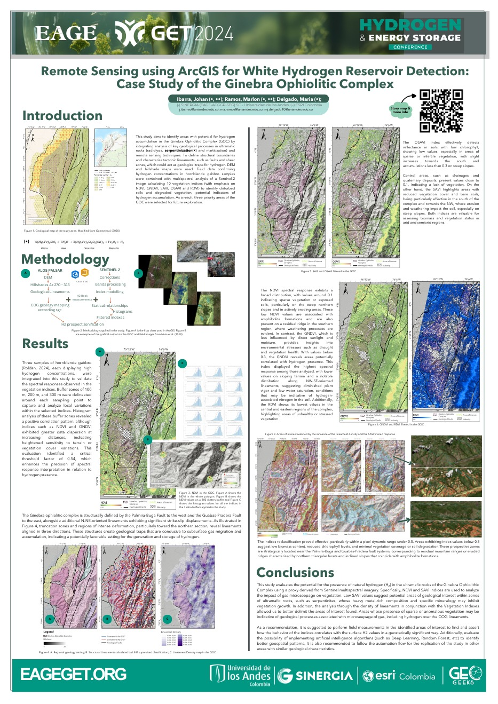
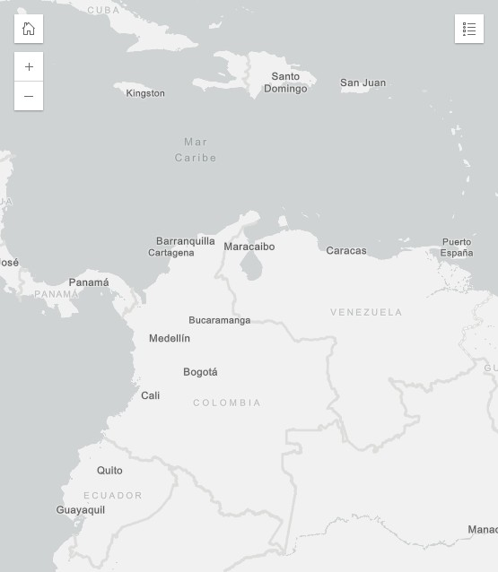

Z boson mass reconstruction with CMS Open Data
Selecting dimuon events from public CMS collision data and fitting the invariant mass peak of the Z boson.
Physicist and geoscientist building data pipelines and infrastructure for scientific and geospatial data. MSc student in GeoAI at ITC, University of Twente.
I hold a double BSc in Physics and Geosciences from Universidad de los Andes (Colombia), where I worked on infrared stellar spectroscopy and automated lineament mapping from remote sensing data.
At Esri Colombia I spent two years administering and troubleshooting ArcGIS Enterprise deployments for international clients: servers, enterprise databases, logs and automation. I later led a consulting migration of 220+ services to Google Cloud.
I am now an MSc student in Geo-Information Science and Earth Observation (GeoAI) at ITC, University of Twente, on an ITC Excellence Scholarship. I am interested in applying scientific computing and data engineering to large-scale experiments.
Theses and conference research in astrophysics, structural geology and remote sensing.
Analysed the L-band (3–4 μm) spectrum of Sheliak (β Lyrae) obtained with the CID-InSb spectrograph at San Pedro Mártir Observatory, Mexico. Measured flux ratios and line profiles of the Humphreys, Pfund and Brackett series.
Outcome: Sheliak's spectrum does not fully match standard Be-star or binary-system models, pointing to a case that needs further study.
Built a semi-automatic lineament density workflow with the ArcGIS API for Python and DEM analysis for the Santa Isabel–Líbano district, in Colombia's Central Cordillera, and compared it with known orogenic gold occurrences.
Outcome: strong spatial correlation between high lineament density and gold occurrences, supporting a low-cost screening method for underexplored areas.

Identified potential natural hydrogen reservoirs in the Ginebra Ophiolitic Complex (Colombia) by combining geological indicators of serpentinization and radiolysis with remote sensing. DEM and hillshade analysis defined structural boundaries, while Sentinel-2 vegetation indices (NDVI, GNDVI, SAVI, OSAVI, RDVI) flagged degraded vegetation linked to possible hydrogen seepage. Field samples confirmed hydrogen in hornblende gabbro.
Outcome: three high-priority zones proposed as exploration targets.
With J. Ibarra and M. Delgado.
Selecting dimuon events from public CMS collision data and fitting the invariant mass peak of the Z boson.
Relación entre barcos no operativos y el movimiento de las stocks en el mercado.
Migrated 220+ map services between ArcGIS Enterprise versions on a new cloud deployment, with an automated Python publication pipeline and pandas-based inventory reconciliation.
Augmented-reality applications built with ArcGIS Maps SDK for Unity, presented at the Esri Colombia Users Conference.
Identified potential natural hydrogen reservoirs in the Ginebra Ophiolitic Complex (Colombia) by combining geological indicators of serpentinization and radiolysis with remote sensing. DEM and hillshade analysis defined structural boundaries, while Sentinel-2 vegetation indices (NDVI, GNDVI, SAVI, OSAVI, RDVI) flagged degraded vegetation linked to possible hydrogen seepage. Field samples confirmed hydrogen in hornblende gabbro.
Outcome: three high-priority zones proposed as exploration targets.
With J. Ibarra and M. Delgado.

Collected and georeferenced structured and unstructured data from Defensoría del Pueblo, OCHA, DANE and INDEPAZ, and built dashboards to centralise it. Managed the project's ArcGIS Hub site, maps and applications throughout 2024, and contributed to the analytical reports.
Outcome: actionable reports supporting violence-prevention and human-rights policy.
Open to research internships and collaborations in scientific computing, earth observation and data infrastructure.